Released on May 31, 2007
(Next Release on June 6, 2007)
Summer Breeze
When a summer breeze occurs on a hot day, it instantly makes you “feel fine”, as James Seals wrote in the song “Summer Breeze”, first performed by Seals and Crofts in 1972 and more recently performed by Jason Mraz. With the Memorial Day weekend behind us and the official start of the summer driving season now underway, those drivers in parts of the country that saw retail gasoline prices dip a little over the past week may feel as if a summer breeze has provided a little relief to what looks like a summer of high prices. Whether this relief is temporary or the start of a longer period of declining prices remains to be seen.
While not widespread across the country, many drivers did see lower prices this past week and those regions which did experience increases saw prices rise by only a couple of pennies (see the section below for regional changes in retail gasoline prices from May 21 to May 28). One reason prices declined is an increase in supply in recent weeks. Crude oil inputs to refineries have risen from about 15 million barrels per day at the end of April to above 15.6 million barrels per day in the last two weeks, albeit still shy of the 16 million barrels per day mark some analysts are looking forward to seeing at some point this summer. Gasoline production has also increased, averaging 9.3 million barrels per day last week. Meanwhile, imports have picked up, with last week averaging 1.6 million barrels per day of total gasoline imports, the third highest recorded weekly average ever. Relatively high supplies generated the fourth consecutive weekly stock build, although inventories still remain well below normal levels.
EIA data also suggest a slowing in gasoline demand growth in recent weeks, with gasoline demand growth over year-ago levels, on a four-week moving average basis, slowing from over 2 percent to closer to 1 percent.
Four-Week Moving Average Demand Growth Rates Compared to Same Period in 2006
| Four weeks ending: | Percent Growth from Last Year |
| April 13 | 2.5% |
| April 20 | 2.3% |
| April 27 | 1.6% |
| May 4 | 1.0% |
| May 11 | 1.0% |
| May 18 | 1.2% |
| May 25 | 1.4% |
How retail gasoline prices shape up the rest of the summer depends on many variables that are difficult to predict. How quickly refineries fully return from both unplanned outages and maintenance, and whether more unplanned outages occur, will have a significant impact on the future path of prices. Some analysts are expecting to see refinery maintenance remain relatively high even into June. Additionally, high import volumes will be another key to keeping supplies adequate to continue to build stocks relative to normal patterns. How consumers respond to price changes will also be closely watched by analysts. And, of course, there remains a host of trouble spots across the globe that could affect crude oil supply and prices, and thus gasoline prices, on short notice (e.g., Venezuela, Nigeria, Iran, etc.). Whether or not the recent welcome breeze of retail price declines in some parts of the country can be sustained and extended into a steady cooling of prices on a nationwide basis is yet to be determined.
Gasoline Prices Decline While Diesel Prices Increase
After four consecutive weekly increases, the U.S. average retail price for regular gasoline declined 0.9 cent to 320.9 cents per gallon as of May 28, 2007, 34.2 cents per gallon higher than this time last year. However, prices were mixed across the regions. East Coast and Rocky Mountain prices increased, with East Coast prices up 0.1 cent to 309.8 cents per gallon and Rocky Mountain prices up 1.1 cents per gallon to reach 327.6 cents per gallon. In the Midwest, prices declined 0.6 cent to 332.0 cents per gallon, while prices for the Gulf Coast fell 2.5 cents to 306.7 cents per gallon. West Coast prices were down 2.3 cents to 334.9 cents per gallon. The average price for regular grade in California was down 2.9 cents to 340.7 cents per gallon, but remains 14.1 cents per gallon above last year's price.
Retail diesel prices rose last week, increasing 1.4 cents to 281.7 cents per gallon. However, prices are 6.5 cents per gallon lower than at this time last year. East Coast prices rose 1.3 cents to 281.1 cents per gallon. In the Midwest, prices were up 1.0 cent to 278.3 cents per gallon, while the Gulf Coast saw an increase of 2.9 cents to 277.6 cents per gallon. The only region to see a decrease in price was the Rocky Mountains, where prices were down 1.3 cents to 298.0 cents per gallon. Prices on the West Coast saw an increase of 1.8 cents to 293.9 cents per gallon, while California prices rose 2.0 cents to 297.5 cents per gallon, 25.2 cents per gallon lower than at this time last year.
Propane Inventories Resume Strong Build
Propane inventories regained momentum and posted a 2.2 million barrel build last week, pushing inventories up to an estimated 35.1 million barrels as of May 25, 2007. This follows the prior week’s modest gains that, in recent weeks, have shown propane inventories vacillating between weak and strong builds. Regionally, East Coast inventories continued lower for a second week with a loss of 0.2 million barrels, while inventories in the Midwest and Gulf Coast regions posted similar gains last week, 1.1 million and 1.2 million barrels, respectively. During this same time, the combined Rocky Mountain/West Coast region remained relatively unchanged. Propylene non-fuel use inventories moved up by 0.1 million barrels to account for a smaller 7.4 percent share of total propane/propylene inventories, compared with the prior week’s 7.6 percent share.
Text from the previous editions of “This Week In Petroleum” is now accessible through a link at the top right-hand corner of this page.
| Retail Prices (Cents Per Gallon) | |||||||
| 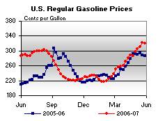 | 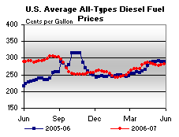 | ||||||
| Retail Data | Changes From | Retail Data | Changes From | ||||
| 05/28/07 | Week | Year | 05/28/07 | Week | Year | ||
| Gasoline | 320.9 | Diesel Fuel | 281.7 | ||||
| Spot Prices (Cents Per Gallon) | |||||||||||||||||||||||||||||||||||||||
| 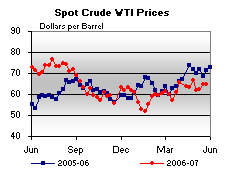 | 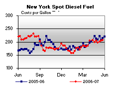 | ||||||||||||||||||||||||||||||||||||||
| 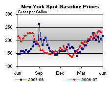 | 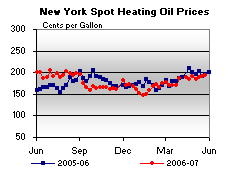 | ||||||||||||||||||||||||||||||||||||||
|
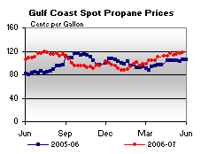 | ||||||||||||||||||||||||||||||||||||||
| Stocks (Million Barrels) | |||||||
| 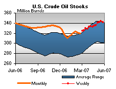 | 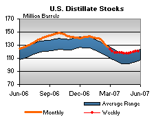 | ||||||
| 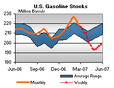 | 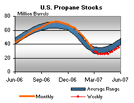 | ||||||
| Stocks Data | Changes From | Stocks Data | Changes From | ||||
| 05/25/07 | Week | Year | 05/25/07 | Week | Year | ||
| Crude Oil | 342.2 | Distillate | 120.4 | ||||
| Gasoline | 198.0 | Propane | 35.079 | ||||